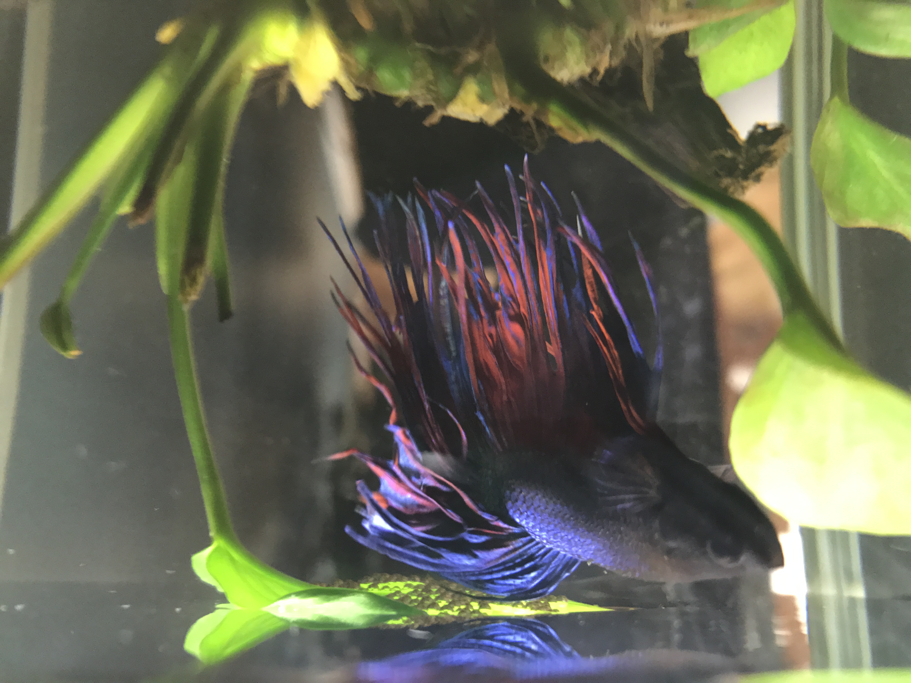
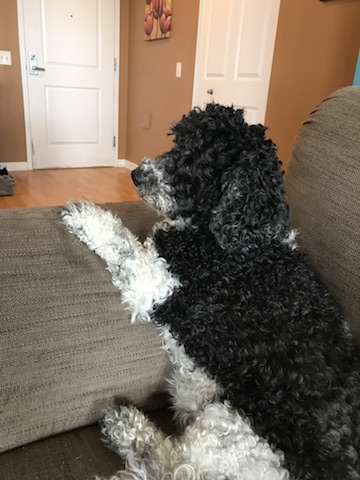
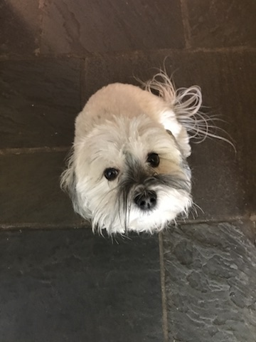

Hello! Welcome to my website. My name is Gill.
I was once told that, as a fish, my memory only last up to about 3 seconds... but while that theory has been debunked, my memory isn't all that good. So I figured "why not jot my notes down?" Since pen and paper are not very conducive to my environment, I invested in a tiny bluetooth (or as we call it, deep-bluetooth)headset and am dictating this to my buddy's computer.
I'm very lucky to have such a nice family. I have two very cool human roommates, named Julie and Jim. I have one step-sister named Roxy, who's favorite activity is napping.
I also have one cousin, named Luke. He's a sweet little guy who loves Pupperoni.
To be perfectly honest, my typical day is very relaxing. I typically wake up and have a few protein pellets, swim some laps, then take a nap. It's a good life. Sometimes I get a treat of bloodworms or mysis.
I have a lovely home, if I do say so myself. It includes the following:
These are all things that make a good betta home great!
if you'd like more information about having a betta as a roommate, you can find more information at Pet Sitters International website. The site goes into a bit more information about how to help care for us, our likes and dislikes, and other tips to help us live longer. This site is also nice because it'll give you a little more history about how we bettas evolved. The site is also nice because it seems to be using more page layout, which I hope to incorperate later, once my human roommate learns how to do it.